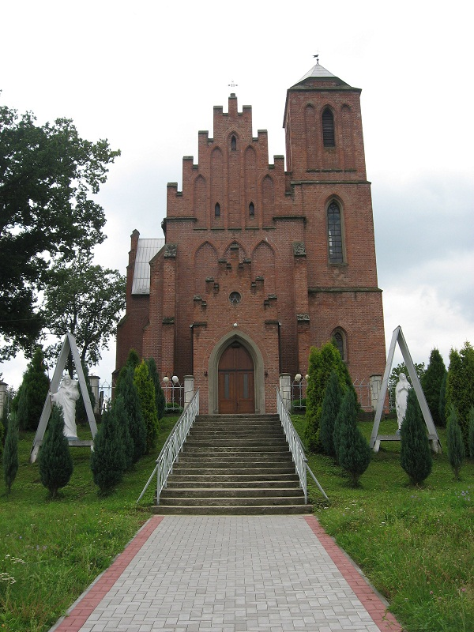

Parafia Ustrobna
Wieś Ustrobna istnieje od 1446 r. W 1855 r. ks. Henryk Zaremba Skrzyński nabył od Henryka Kurdanowskiego
wieś Ustrobną na własność. Ks. Henryk Skrzyński po nabyciu wsi Ustrobnej, zamieszkał w niej i w 1860 r. jako
główny fundator rozpoczął budowę kościoła. Poświęcenie kamienia węgielnego odbyło się 13.06.1860 r. Budowa
kościoła trwała przez 17 lat. Poświęcenie kościoła odbyło się w 1877 r. Dokonał go ks. Ignacy Łobos, kanonik
Kapituły Katedralnej w Przemyślu, późniejszy Biskup Tarnowski. Fundator sprawiał ołtarz główny,
przedstawiający Golgotę: Chrystus ukrzyżowany, rzeźbiony w Monachium, figury Matki Bożej Bolesnej i św. Jana
Apostoła, wykonane w pracowni Franciszka Wyspiańskiego - ojca poety, oraz dzwony wykonane pracowni Wienner
Neustadt. Imiona dzwonów: św. Jan Kanty (328 kg), Matki Bożej Wspomożenia Wiernych (283 kg), św. Franciszek
Ksawery (186 kg). Dzwony zostały zrabowane w 1917 r. przez wojska austriackie. Ustrobna należała do parafii
Szebnie. Od 1880 r. staje się ekspozyturą. Rozpoczęto wtedy budować plebanię, a w 1881 r. założono cmentarz
grzebalny. Od 1882 r. rozpoczęto pisać księgi metrykalne. Pierwszym współpracownikiem ks. H. Skrzyńskiego
był ks. Stefan Wawro (1880-1887). Ks. Henryk Skrzyński sprzedał ziemię i uposażył kościół, probostwo i
organistę. Bp Łukasz Solecki w dniu 15.11.1888 r. wydał dekret erekcyjny parafii, ale nie wszedł on w życie,
ponieważ brakowało kolatora. W 1895 r. kolatorem stał się Stanisław Strowieyski z Bratkówki, ojciec bł.
Stanisława Starowieyskiego. I tak w dniu 05.10.1895 r. erygowano parafię. Pierwszym proboszczem został ks.
Michał Goryl (1895 - 1911). Fundator kościoła zmarł 17.04.1903 r. w Krakowie i został pochowany w
podziemiach kościoła w Ustrobnej. Kościół konsekrował bp J. S. Pelczar, Biskup Przemyski, dnia 23.05.1903 r.
W 1943 r. kościół został zniszczony w 60% i obrabowany. Po wojnie przystąpiono do odbudowy świątyni. W
latach 1967- 1969 wybudowano nową plebanię. Wieś Bratkówka została przyłączona do parafii Ustrobna w dniu
16.10.1975 r., zaś wieś Bajdy 29.01.1982 r. Ojciec św. Jan Paweł II w Warszawie 13.06.1999 r. beatyfikował
bł. Stanisława Starowieyskiego, jednego z 108 męczenników II wojny światowej, który urodził się 11.05.1895
r. w Ustrobnej.
